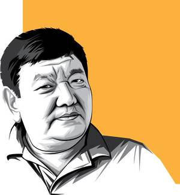
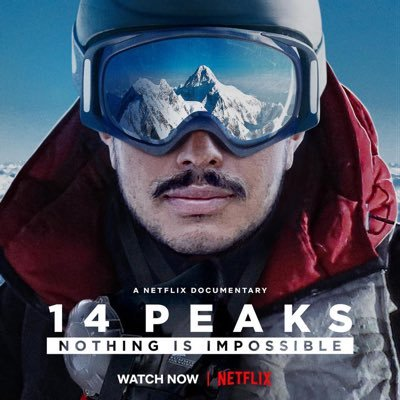
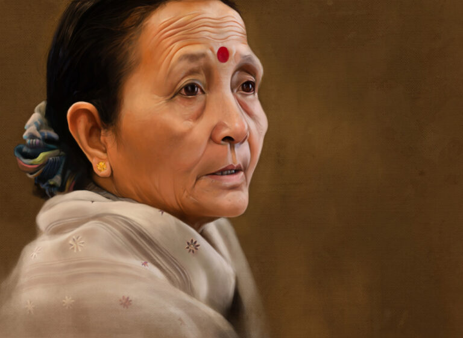

Dr.Sanduk Ruit
Dr. Ruit is the co-founder of the Himalayan Cataract Project
The Hobbibox
For almost 20 years, Dr. Ruit had been working at his Tilgaga Eye Centre and giving the gift of sight to people from remote parts of Nepal often working without charge.

Nirmal Purja
16-year career in the military, which included 10 years with the UK Special Forces
Since then, he has gone on to become a truly remarkable mountaineer
In 2018, Nims was appointed as a Member of the Order of the British Empire (MBE) by Queen Elizabeth II for his outstanding work in high altitude mountaineering.

Anuradha Koirala
Anuradha Koirala is the founder of Maiti Nepal
She has received 38 national and international awards for her contribution to society, including the CNN Hero Award in 2010.
Since 1993, her efforts have helped countless women escape from life-threatening situations and empowered many young girls to achieve a brighter future.